Corofin (1.10) vs Pádraig Pearses (0.07)
Connacht Club Final - 2019
#Summary ##Starting Line Up (Number, Player, Playing time) ###Corofin
###Pádraig Pearses
##Scores| Corofin | Pádraig.Pearse.s |
|---|---|
| Jason Leonard 0-03 (1f), | Paul Carey 0-03 (2f), |
| Liam Silke 1-00, | Hubert Darcy 0-01 (0-01f), |
| Gary Sice 0-02 (2f), | Emmett Kelly 0-01 (1’45), |
| Michael Farragher 0-02, | Niall Daly 0-01, |
| Dylan Wall 0-01, | Ronan Daly 0-01. |
| Ronan Steede 0-01, | |
| Colin Brady 0-01. |
| Team | Score.Eff.. | Shots.PerPoss | Scores.PP | Op.Scores.PP | Fk.Score. | Ko. |
|---|---|---|---|---|---|---|
| Corofin | 53% | 48% | 20% | 20% | 75% | 50% |
| Pádraig Pearses | 27% | 45% | 8% | 8% | 50% | 59% |
##Scoring Timeline
##Score Differential 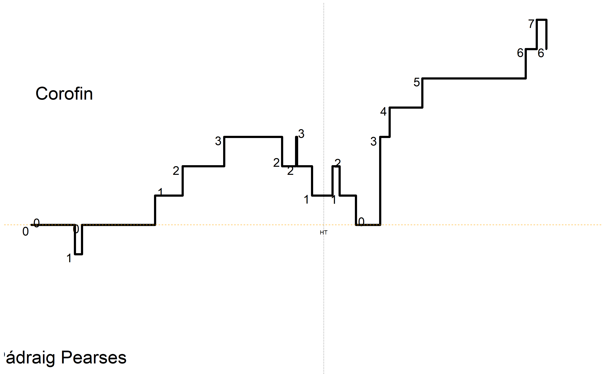
#Positioning & Possessions ##Average Position by Action ###Corofin ###Game 
###Period
###Pádraig Pearses ###Game 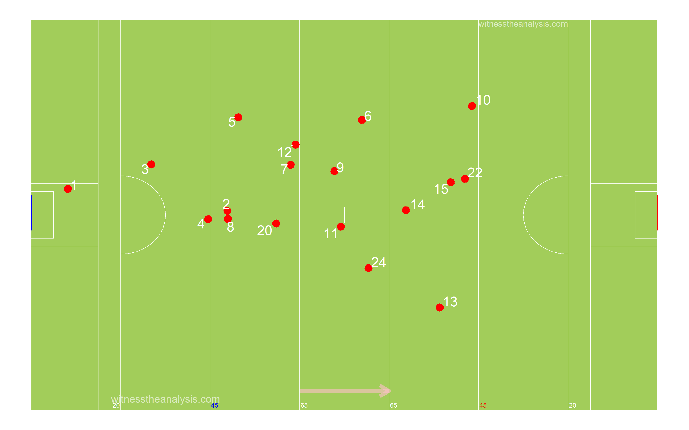
###Period 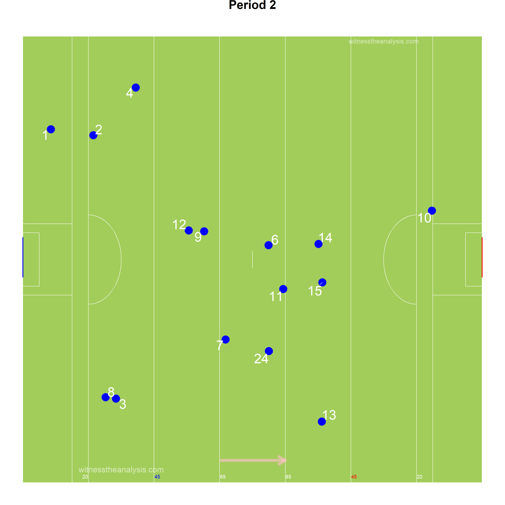
##Areas of Play by Possession ###Corofin
###Pádraig Pearses
##Denisty Map (All Actions) ###Corofin
###Pádraig Pearses
##Path of Possession
| Lines | X | X.1 | X.2 |
|---|---|---|---|
| Action | Colour | Action | Colour |
| Hand Pass | Black | Kickout Lost | Dark Red |
| Run | Blue | Kick Pass Left | Pink |
| Score | Yellow | Kick Pass Right | White |
| Miss shot | Red | Fk/Mk/Sl Pass | Light Blue |
| Kickout | Gold | Pass Loss | Red |
| Dots | |||
| Action | Colour | ||
| Possession Won | Purple | ||
| Ko/Pass Lost | Red | ||
| Fk Won | Blue | ||
| Fk Won (in 45) | Orange | ||
| Kickout Won | Black |
###Corofin - Game 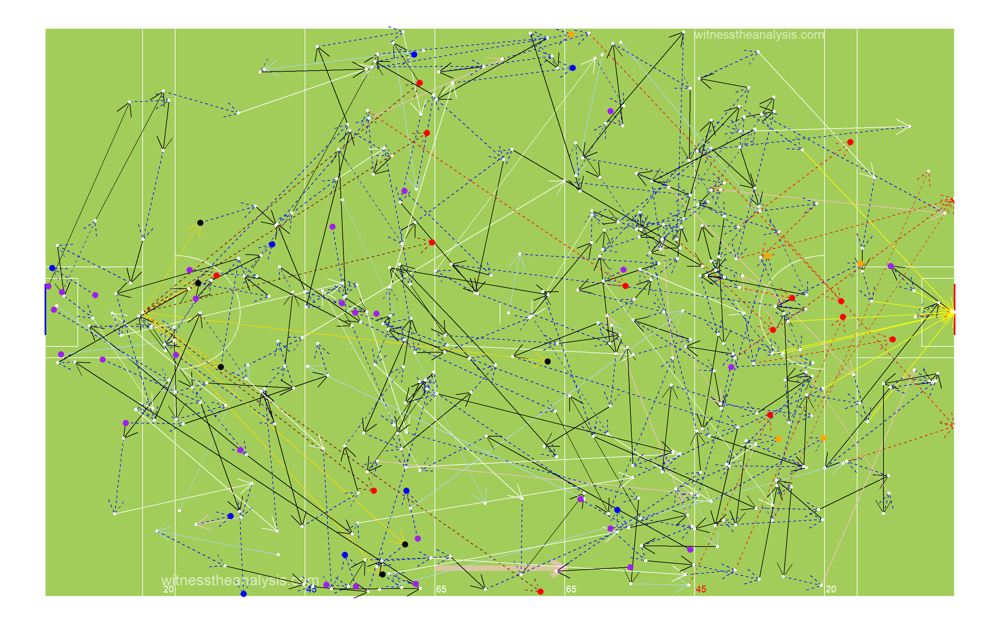
###Pop Starting from Possession Won
###Pop Starting from Kick Out
###Corofin - Period 1
###Corofin - Period 2
###Corofin - Period 3
###Corofin - Period 4
###Pádraig Pearses - Game
###Pop Starting from Possession Won
###Pop Starting from Kick Out

###Pádraig Pearses Period - 1
###Pádraig Pearses Period - 2 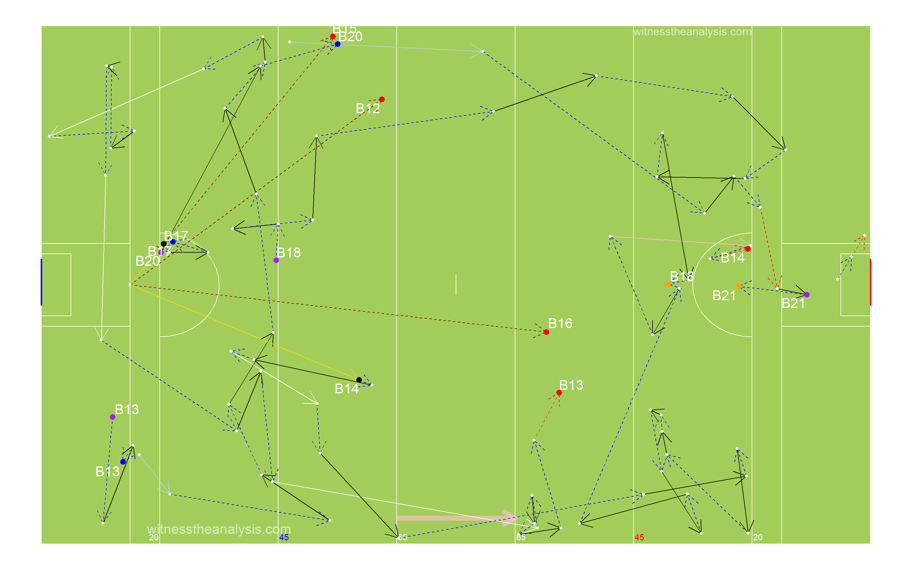
###Pádraig Pearses Period - 3
###Pádraig Pearses Period - 4
##45 Entries ###Corofin - Game
###Corofin - Period 1
###Corofin - Period 2
###Corofin - Period 3
###Corofin - Period 4
###Pádraig Pearses - Game
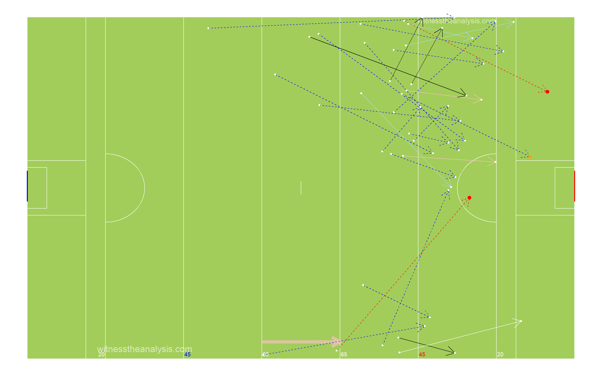
###Pádraig Pearses - Period 1
###Pádraig Pearses- Period 2
###Pádraig Pearses - Period 3
###Pádraig Pearses - Period 4
###Corofin Total
## count
## 1 32###Corofin Handpass
## count
## 1 3###Corofin Run
## count
## 1 18###Corofin Kick Pass Right
## count
## 1 3###Corofin Pass Lost
## count
## 1 3###Corofin Kick Pass Left
## count
## 1 2###Corofin Fk/Mk/Sl Pass
## count
## 1 3###Pádraig Pearses Total
## count
## 1 28###Pádraig Pearses Handpass
## count
## 1 4###Pádraig Pearses Run
## count
## 1 16###Pádraig Pearses Kick Pass Right
## count
## 1 1###Pádraig Pearses Pass Lost
## count
## 1 2###Pádraig Pearses Kick Pass Left
## count
## 1 2###Pádraig Pearses Fk/Mk/Sl Pass
## count
## 1 3#General ##Kick Outs ###Corofin
###Period 1
###Period 2
###Period 3
###Period 4
###Kickout Efficiency 
###Kickout Network - Corofin
###Kickout Density
###Pádraig Pearses
###Period 1
###Period 2
###Period 3
###Period 4
###Kickout Efficiency
###Kickout Network - Pádraig Pearses
###Kickout Density 
##Turn overs/Possession Won
###Corofin
###Pádraig Pearses


##Frees Won ###Corofin
###Pádraig Pearses
##Frees Loss ###Corofin
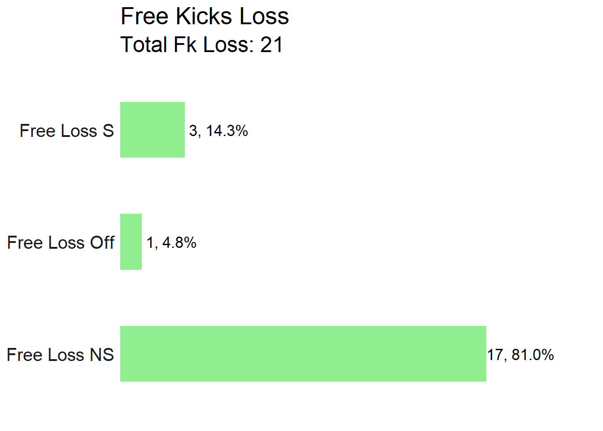
###Pádraig Pearses
#Attacking
##Attacking Stats| . | Shot | Score | shot | score |
|---|---|---|---|---|
| AttTime | 00:08:54 | 00:04:53 | 00:08:32 | 00:04:11 |
| possave | 00:00:28 | 00:00:27 | 00:00:30 | 00:00:36 |
| phaseave | 00:00:18 | 00:00:15 | 00:00:16 | 00:00:19 |
| Origin Type | ||||
| Shot | Score | shot | score | |
| PW | 15 | 9 | 13 | 5 |
| Ko | 4 | 2 | 5 | 2 |
| Pitch Area Origin | ||||
| Shot | Score | shot | score | |
| Def | 9 | 5 | 11 | 4 |
| Def Mid | 6 | 4 | 0 | 0 |
| Att Mid | 3 | 0 | 3 | 1 |
| Att | 1 | 1 | 4 | 2 |
| Poss Duration | ||||
| secs | Shot | Score | shot | score |
| 0-9 | 1 | 1 | 4 | 2 |
| Oct-19 | 7 | 4 | 3 | 0 |
| 20-29 | 3 | 2 | 5 | 2 |
| 30-39 | 3 | 2 | 1 | 1 |
| 40-49 | 4 | 1 | 2 | 0 |
| 50-59 | 0 | 0 | 1 | 0 |
| 60-69 | 0 | 0 | 0 | 0 |
| 70+ | 1 | 1 | 2 | 2 |
| Team | Poss | Phase | All.Shots | All.Scores | Shots.Per.Poss | Scores.PP | Shots.Op | Scores.Op | Score.Eff.. | Op.Scores.PP |
|---|---|---|---|---|---|---|---|---|---|---|
| Corofin | 40 | 56 | 19 | 11 | 48% | 28% | 15 | 8 | 53% | 20% |
| Pádraig Pearses | 40 | 62 | 18 | 7 | 45% | 18% | 11 | 3 | 27% | 8% |
| Team | Poss Time | Ave Poss Shot | Ave Phase Shot | Ave Poss Scr | Ave Phase Scr | Ave Act Poss | Ave Act Sht | Ave Act Scr | ||
| Corofin | 00:14:25 | 00:00:28 | 00:00:18 | 00:00:27 | 00:00:15 | 12.53 | 16.21 | 16.18 | ||
| Pádraig Pearses | 00:15:36 | 00:00:30 | 00:00:16 | 00:00:36 | 00:00:19 | 13.00 | 15.53 | 18.71 |
| Area | 0-9 | 10-19 | 20-29 | 30-39 | 40-49 | 50-59 | 60-69 | 70+ | Total |
| Def | 0 | 3 | 1 | 1 | 4 | 0 | 0 | 0 | 9 |
| Def Mid | 0 | 2 | 1 | 2 | 0 | 0 | 0 | 1 | 6 |
| Att Mid | 0 | 2 | 1 | 0 | 0 | 0 | 0 | 0 | 3 |
| Att | 1 | 0 | 0 | 0 | 0 | 0 | 0 | 0 | 1 |
| Corofin | Scores | Time (secs) | |||||||
| Area | 0-9 | 10-19 | 20-29 | 30-39 | 40-49 | 50-59 | 60-69 | 70+ | Total |
| Def | 0 | 2 | 1 | 1 | 1 | 0 | 0 | 0 | 5 |
| Def Mid | 0 | 2 | 1 | 1 | 0 | 0 | 0 | 1 | 5 |
| Att Mid | 0 | 0 | 0 | 0 | 0 | 0 | 0 | 0 | 0 |
| Att | 1 | 0 | 0 | 0 | 0 | 0 | 0 | 0 | 1 |
| Pádraig Pearses | Shots | Time (secs) | |||||||
| Area | 0-9 | 10-19 | 20-29 | 30-39 | 40-49 | 50-59 | 60-69 | 70+ | Total |
| Def | 0 | 2 | 4 | 1 | 2 | 1 | 0 | 1 | 11 |
| Def Mid | 0 | 0 | 0 | 0 | 0 | 0 | 0 | 0 | 0 |
| Att Mid | 0 | 1 | 1 | 0 | 0 | 0 | 0 | 1 | 3 |
| Att | 4 | 0 | 0 | 0 | 0 | 0 | 0 | 0 | 4 |
| Pádraig Pearses | Scores | Time (secs) | |||||||
| Area | 0-9 | 10-19 | 20-29 | 30-39 | 40-49 | 50-59 | 60-69 | 70+ | Total |
| Def | 0 | 0 | 2 | 1 | 0 | 0 | 0 | 1 | 4 |
| Def Mid | 0 | 0 | 0 | 0 | 0 | 0 | 0 | 0 | 0 |
| Att Mid | 0 | 0 | 0 | 0 | 0 | 0 | 0 | 1 | 1 |
| Att | 2 | 0 | 0 | 0 | 0 | 0 | 0 | 0 | 2 |
| Line.Colour | Time.secs |
|---|---|
| black | 1-9 |
| blue | 10-19 |
| red | 20-29 |
| purple | 30-39 |
| yellow | 40-49 |
| white | 50-59 |
| orange | 60-69 |
| pink | 70+ |
| Dot Colours | |
| Black & White | Ko Rec’d |
| White & Black | PW |
| Blue & White | Fk Pass |
| Red & White | Op Shot |
| Purple & White | Fk Shot |
| Green & White | 45 |
##Shot Possessions ###Corofin
###Pádraig Pearses
##Score Possessions ###Corofin
###Pádraig Pearses
##Open Play Shots - Location & Outcome
###Corofin
###Shot Efficiency - Corofin 
###Shot Pressure - Corofin
###Shot Density
###Pádraig Pearses
###Shot Efficiency - Pádraig Pearses 
###Shot Density 
###Shot Pressure - Pádraig Pearses
##All Shots - Location & Outcome ###Corofin
###All Shot Density
###Free Kick Shot Efficiency - Corofin
###Pádraig Pearses
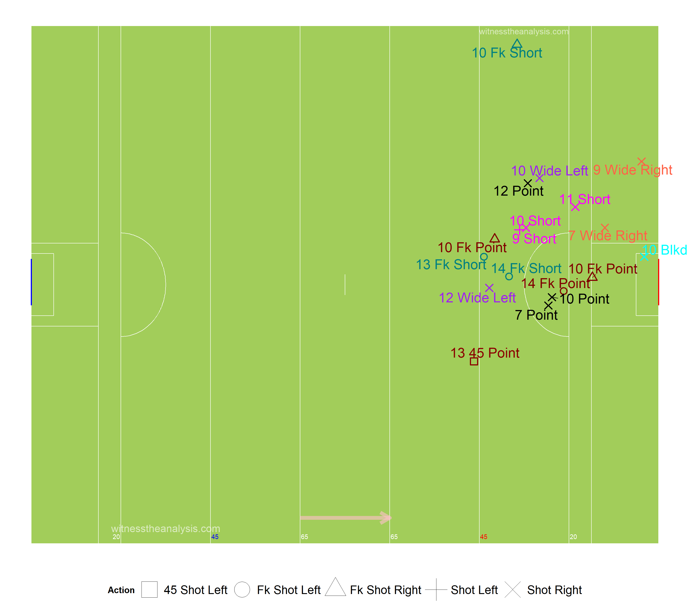
###All Shot Density
###Free Kick Shot Efficiency - Pádraig Pearses
##All Shots Origin by Possession ###Corofin (Blue = Score)
###Pádraig Pearses (Blue = Score)
##Open Play Shot Origin by Phase ###Corofin (Blue = Score) 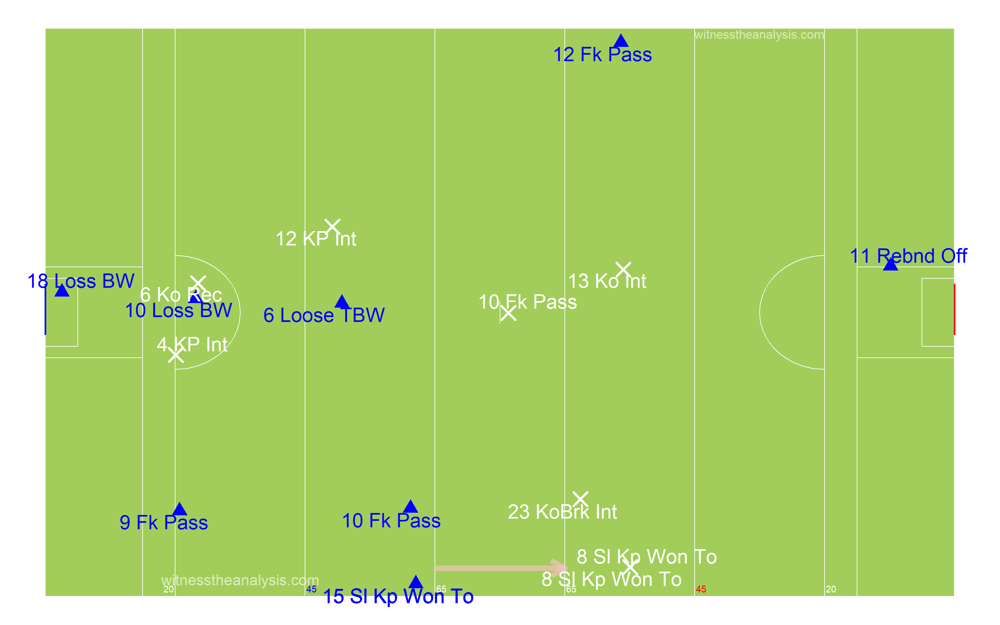
###Pádraig Pearses (Blue = Score)
##Shot Network ###Corofin 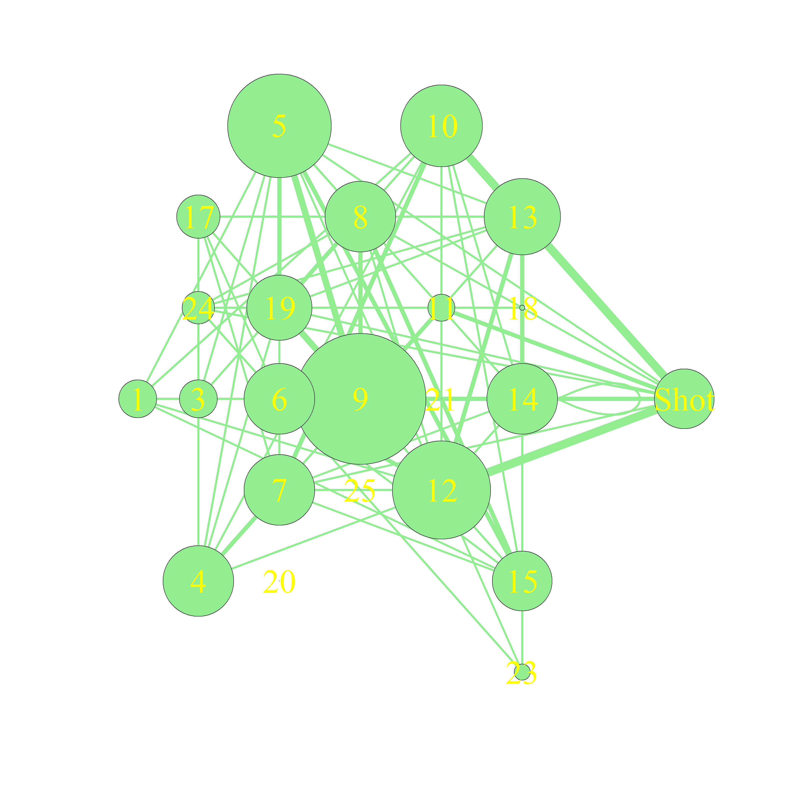
###Pádraig Pearses
##Score Network ###Corofin
###Pádraig Pearses
#Passing
##Pass Breakdown| . | Corofin | Pádraig.Pearses |
|---|---|---|
| Hp | 130 | 146 |
| Kp Left | 10 | 4 |
| Kp Right | 29 | 21 |
| Fk Pass | 12 | 13 |
| Sl Pass | 4 | 2 |
| Mk Kp | 0 | 1 |
| Mk Hp | 0 | 0 |
| Sl Kp Won To | 0 | 0 |
| 45 Pass | 0 | 0 |
| Hp Assist | 4 | 2 |
| Kp L Assist | 1 | 1 |
| Kp R Assist | 1 | 0 |
| Hp Key | 5 | 4 |
| Kp L Key | 1 | 2 |
| Kp R Key | 1 | 0 |
| Mk Kp Key | 0 | 0 |
| Mk Kp Key | 0 | 0 |
##All Passes ###Corofin
###Pádraig Pearses

##Passes into 45 ###Corofin

###Pádraig Pearses
##Passes Inside Opp 65 ###Corofin
###Pádraig Pearses
##Pass Network ###Corofin

###In Degree (Number of Players a Player Received a Pass from)
## Steede D. Burke L. Silke Molloy Shot Leonard Sice Ma. Farragher McHugh Wall I. Burke Lost
## 14 13 12 11 11 10 9 9 9 8 8 6
## Power Cunningham Lundy Brady C. Silke Fitzgerald Mi. Farragher D. Silke Canney G. Burke McGrath Hynes
## 5 5 5 5 3 3 3 2 1 0 0 0###Out Degree (Number of Players a Player Made a Pass to)
## Steede D. Burke L. Silke Molloy Sice Leonard I. Burke Lundy McHugh Wall Cunningham Ma. Farragher
## 16 13 12 12 11 9 9 9 9 8 7 7
## C. Silke Fitzgerald Mi. Farragher Brady Power D. Silke Canney McGrath G. Burke Hynes Lost Shot
## 6 6 6 4 3 3 1 1 0 0 0 0###Strength in (Number of Passes Received by a Player)
## Steede D. Burke L. Silke Shot Wall Molloy Leonard Ma. Farragher McHugh Sice I. Burke Lundy
## 27 20 17 15 12 12 11 11 11 10 10 10
## Lost Cunningham Power Mi. Farragher C. Silke Brady Fitzgerald D. Silke Canney G. Burke McGrath Hynes
## 10 8 6 6 5 5 4 2 1 0 0 0###Strength Out (Number of Passes/Shots Made by a Player)
## Steede D. Burke L. Silke Sice Molloy Leonard McHugh Wall I. Burke Ma. Farragher Lundy Cunningham
## 29 21 19 17 15 13 12 11 11 10 10 9
## Mi. Farragher Power C. Silke Fitzgerald Brady D. Silke Canney McGrath G. Burke Hynes Lost Shot
## 8 6 6 6 5 3 1 1 0 0 0 0###Betweenness Centrality (Flow of Passes through a Player)
## Molloy D. Burke Brady Steede L. Silke McHugh Leonard Sice I. Burke Ma. Farragher Shot Wall
## 0.0926332483 0.0848682084 0.0833586100 0.0677219229 0.0600678701 0.0380337966 0.0243477726 0.0209980097 0.0190205812 0.0150886730 0.0095949027 0.0063313764
## Lundy Mi. Farragher C. Silke Fitzgerald D. Silke Cunningham Power Lost G. Burke Canney McGrath Hynes
## 0.0050440987 0.0021073165 0.0020042979 0.0017114818 0.0015349639 0.0013346628 0.0009945588 0.0007530548 0.0000000000 0.0000000000 0.0000000000 0.0000000000###Closeness Centrality (How Well connected and central a Player is within the Teams Network)
## L. Silke D. Burke Molloy Steede Leonard Sice McHugh Wall I. Burke Shot Ma. Farragher Lundy
## 0.31081081 0.31081081 0.31081081 0.31081081 0.30263158 0.29487179 0.29487179 0.29113924 0.29113924 0.29113924 0.28750000 0.28395062
## Brady C. Silke Cunningham Mi. Farragher Power Lost Fitzgerald D. Silke Canney McGrath G. Burke Hynes
## 0.28048780 0.27710843 0.27710843 0.27710843 0.27058824 0.27058824 0.26744186 0.26744186 0.25842697 0.22549020 0.04166667 0.04166667###Entropy (The Unpredictability in who a Player Passes to/Takes shot)
## Lost D. Burke Wall Lundy Mi. Farragher Steede Shot Cunningham Sice L. Silke Ma. Farragher Power
## 0.9464119 0.9466699 0.9541007 0.9577356 0.9587447 0.9597580 0.9606293 0.9636983 0.9672654 0.9684596 0.9700450 0.9727653
## Leonard C. Silke Molloy McHugh I. Burke Fitzgerald Brady D. Silke Canney
## 0.9738495 0.9766147 0.9794566 0.9805403 0.9813826 0.9848587 0.9848587 1.0000000 1.0000000###Global clustering coefficient (Groups of Players who pass to each other)
## [1] 0.6221662###eigen_centrality (How well connected the well connected are)
## Steede D. Burke L. Silke Wall Sice Molloy Leonard I. Burke McHugh Cunningham Lundy Ma. Farragher
## 1.000000000 0.829775679 0.626050962 0.488594476 0.488469505 0.485037731 0.450672991 0.436777833 0.433803771 0.433495745 0.421739934 0.408625093
## Mi. Farragher Power Shot Lost C. Silke Fitzgerald Brady D. Silke Canney G. Burke Hynes McGrath
## 0.312571424 0.307379671 0.270906384 0.254508514 0.252844290 0.244617337 0.136007696 0.078394322 0.048917123 0.046573863 0.046573863 0.005071524##Pádraig Pearses
###In Degree (Number of Players a Player Received a Pass from)
## N. Daly C. Daly R. Daly Richardson N. Carty Kelly Payne Butler S. Carty Butler Murray Carey L. Daly Lost Downey
## 14 13 11 8 7 7 7 7 6 6 6 6 6 6 5
## Darcy Shot Whelan Fahy Duffy Mulvey Kelly Feehily
## 5 5 4 1 0 0 0 0###Out Degree (Number of Players a Player Made a Pass to)
## C. Daly R. Daly N. Daly Butler N. Carty S. Carty Richardson L. Daly Payne Downey Butler Carey Kelly Whelan Darcy
## 14 13 12 9 9 8 8 8 8 7 7 6 6 5 5
## Murray Fahy Duffy Mulvey Kelly Feehily Lost Shot
## 4 1 0 0 0 0 0 0###Strength in (Number of Passes Received by a Player)
## R. Daly C. Daly N. Daly Payne Carey Butler Shot S. Carty Butler Richardson N. Carty Lost Downey Murray L. Daly
## 24 24 23 13 11 11 11 10 10 10 9 9 8 8 7
## Kelly Whelan Darcy Fahy Duffy Mulvey Kelly Feehily
## 7 6 5 1 0 0 0 0###Strength Out (Number of Passes/Shots Made by a Player)
## N. Daly C. Daly R. Daly S. Carty N. Carty Butler Carey Butler Richardson Payne Downey L. Daly Whelan Kelly Darcy
## 32 26 21 13 13 12 12 12 11 11 9 9 7 7 6
## Murray Fahy Duffy Mulvey Kelly Feehily Lost Shot
## 5 1 0 0 0 0 0 0###Betweenness Centrality (Flow of Passes through a Player)
## C. Daly R. Daly N. Daly Butler Payne L. Daly Richardson N. Carty Kelly Carey S. Carty Butler Downey
## 0.0861563471 0.0745205485 0.0589346426 0.0209161029 0.0170810148 0.0157622998 0.0147550933 0.0131747832 0.0108645563 0.0100515045 0.0082849845 0.0076979368 0.0053974620
## Darcy Whelan Murray Lost Shot Fahy Duffy Mulvey Kelly Feehily
## 0.0033963631 0.0027594254 0.0026683952 0.0023601218 0.0001967729 0.0000000000 0.0000000000 0.0000000000 0.0000000000 0.0000000000###Closeness Centrality (How Well connected and central a Player is within the Teams Network)
## C. Daly R. Daly N. Daly Payne Butler Richardson S. Carty L. Daly Kelly Butler Downey Murray N. Carty Carey Darcy
## 0.19642857 0.19469027 0.19469027 0.18965517 0.18803419 0.18803419 0.18644068 0.18644068 0.18487395 0.18487395 0.18333333 0.18333333 0.18333333 0.18333333 0.18333333
## Whelan Lost Shot Fahy Duffy Mulvey Kelly Feehily
## 0.18181818 0.18032787 0.17886179 0.17460317 0.04347826 0.04347826 0.04347826 0.04347826###Entropy (The Unpredictability in who a Player Passes to/Takes shot)
## Shot Carey Downey Butler R. Daly N. Daly C. Daly Payne Lost Whelan S. Carty Butler Murray N. Carty Richardson
## 0.9417623 0.9432791 0.9513118 0.9521968 0.9524091 0.9572462 0.9603529 0.9654878 0.9683925 0.9732265 0.9739392 0.9739392 0.9750064 0.9784943 0.9790317
## L. Daly Darcy Kelly Fahy
## 0.9849358 0.9866600 0.9902871 1.0000000###Global clustering coefficient (Groups of Players who pass to each other)
## [1] 0.6###eigen_centrality (How well connected the well connected are)
## N. Daly C. Daly R. Daly Payne Butler Carey S. Carty Butler Downey Richardson N. Carty Murray L. Daly Shot Kelly
## 1.00000000 0.90652033 0.85588604 0.47535621 0.47337255 0.46647238 0.46346848 0.44916923 0.38649611 0.36869391 0.34865231 0.31616411 0.29611245 0.25936980 0.24900460
## Whelan Darcy Lost Fahy Duffy Mulvey Kelly Feehily
## 0.22888330 0.21993306 0.15312025 0.05945523 0.01595971 0.01595971 0.01595971 0.01595971#Player Stats ##Player On Ball Possession (Number, Player, Total) ###Corofin
###Pádraig Pearses
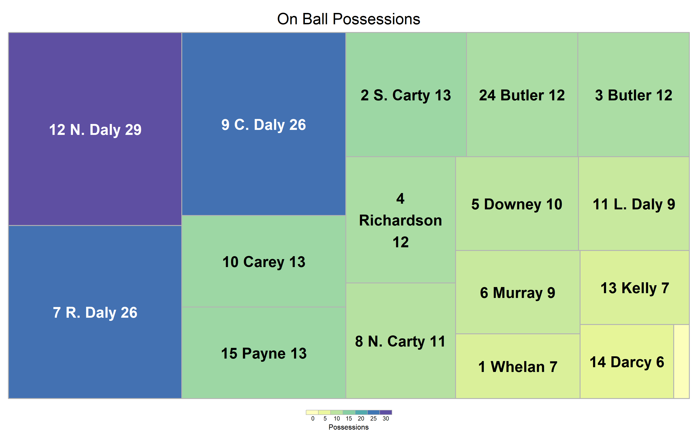
##Player Possession Involvement ###Corofin
###Pádraig Pearses
##Player Shot Involvement
###Corofin
###Pádraig Pearses
##Player Score Involvement
###Corofin
###Pádraig Pearses 
##Posessions Per Playing Time
##Player % involvement and shot efficiency| Team | ply | opshots | Totteamshot | opscr | Totteamscr | convrate |
|---|---|---|---|---|---|---|
| Corofin | Power | 0 | 0% | 0 | 0% |
|
| Corofin | C. Silke | 0 | 0% | 0 | 0% |
|
| Corofin | Fitzgerald | 0 | 0% | 0 | 0% |
|
| Corofin | L. Silke | 1 | 7% | 1 | 14% | 100% |
| Corofin | D. Burke | 1 | 7% | 0 | 0% | 0% |
| Corofin | Cunningham | 1 | 7% | 0 | 0% | 0% |
| Corofin | Wall | 1 | 7% | 1 | 14% | 100% |
| Corofin | Molloy | 1 | 7% | 0 | 0% | 0% |
| Corofin | Steede | 1 | 7% | 1 | 14% | 100% |
| Corofin | Sice | 1 | 7% | 0 | 0% | 0% |
| Corofin | Mi. Farragher | 2 | 13% | 2 | 29% | 100% |
| Corofin | Leonard | 3 | 20% | 2 | 29% | 67% |
| Corofin | I. Burke | 0 | 0% | 0 | 0% |
|
| Corofin | Ma. Farragher | 2 | 13% | 0 | 0% | 0% |
| Corofin | Lundy | 0 | 0% | 0 | 0% |
|
| Corofin | McHugh | 0 | 0% | 0 | 0% |
|
| Corofin | D. Silke | 0 | 0% | 0 | 0% |
|
| Corofin | Brady | 1 | 7% | 1 | 14% | 100% |
| Corofin | G. Burke | 0 | 0% | 0 | 0% |
|
| Corofin | Canney | 0 | 0% | 0 | 0% |
|
| Corofin | McGrath | 0 | 0% | 0 | 0% |
|
| Corofin | Hynes | 0 | 0% | 0 | 0% |
|
| Team | ply | opshots | Totteamshot | opscr | Totteamscr | convrate |
|---|---|---|---|---|---|---|
| Pádraig Pearses | Whelan | 0 | 0% | 0 | 0% |
|
| Pádraig Pearses | S. Carty | 0 | 0% | 0 | 0% |
|
| Pádraig Pearses | Butler | 0 | 0% | 0 | 0% |
|
| Pádraig Pearses | Richardson | 0 | 0% | 0 | 0% |
|
| Pádraig Pearses | Downey | 0 | 0% | 0 | 0% |
|
| Pádraig Pearses | Murray | 0 | 0% | 0 | 0% |
|
| Pádraig Pearses | R. Daly | 2 | 18% | 1 | 33% | 50% |
| Pádraig Pearses | N. Carty | 0 | 0% | 0 | 0% |
|
| Pádraig Pearses | C. Daly | 2 | 18% | 0 | 0% | 0% |
| Pádraig Pearses | Carey | 4 | 36% | 1 | 33% | 25% |
| Pádraig Pearses | L. Daly | 1 | 9% | 0 | 0% | 0% |
| Pádraig Pearses | N. Daly | 2 | 18% | 1 | 33% | 50% |
| Pádraig Pearses | Kelly | 0 | 0% | 0 | 0% |
|
| Pádraig Pearses | Darcy | 0 | 0% | 0 | 0% |
|
| Pádraig Pearses | Payne | 0 | 0% | 0 | 0% |
|
| Pádraig Pearses | Butler | 0 | 0% | 0 | 0% |
|
| Pádraig Pearses | Fahy | 0 | 0% | 0 | 0% |
|
| Pádraig Pearses | Duffy | 0 | 0% | 0 | 0% |
|
| Pádraig Pearses | Mulvey | 0 | 0% | 0 | 0% |
|
| Pádraig Pearses | Kelly | 0 | 0% | 0 | 0% |
|
| Pádraig Pearses | Feehily | 0 | 0% | 0 | 0% |
|
##Open Play Shots vs Playing Time
##Open Play Scores vs Playing Time
##Open Play Shots vs Open Play Score
##Open Play Assists vs Playing Time
##Open Play Key Passes vs Playing time
##Actions and Zones ##By Period ###Corofin
###Pádraig Pearses
##Zones Frequency ###Corofin
###Pádraig Pearses